Верналис
Ярколесье
3 ноября 2025
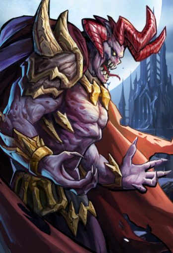
Драакулис
Гульвания
19 мая 2025
Камнемолот
Казиел
27 октября 2025
Королева суккубов
Отравленные Земли
30 июня 2025
| На главную | Возврат на главную страницу проекта |
| 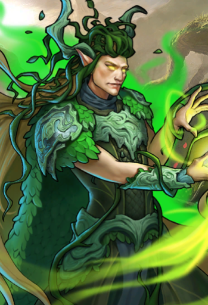 Верналис Ярколесье 3 ноября 2025 | 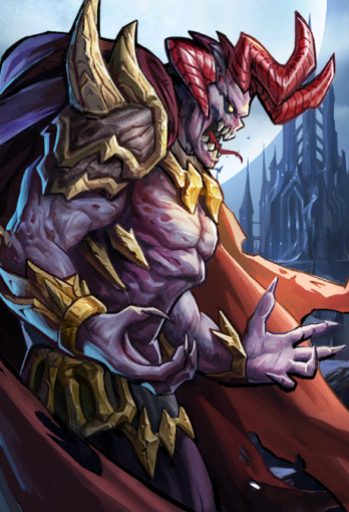 Драакулис Гульвания 19 мая 2025 | Камнемолот Казиел 27 октября 2025 | Королева суккубов Отравленные Земли 30 июня 2025 |
Ранее побывавшие в Кузне, |
Аматиэль Вайтхельм 19 мая 2025 | 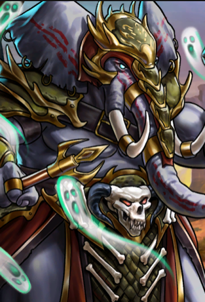 Араватар Земли Прайда 13 октября 2025 | Архигерцог Отравленные Земли 11 августа 2025 | Верховный король Железнобрюх Заеджин 6 октября 2025 | Вульфгарок Могримова Чаща 21 июля 2025 | Голод Апокалипсис 7 июля 2025 | 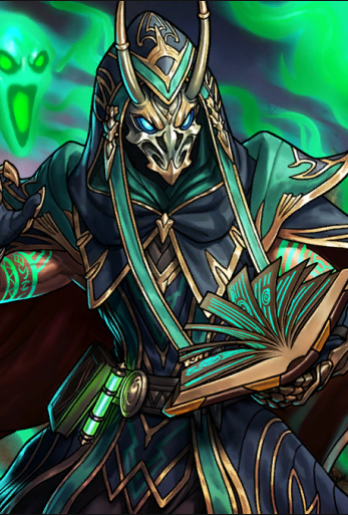 Дэтлок Дрейлак Каракот 2 июня 2025 | 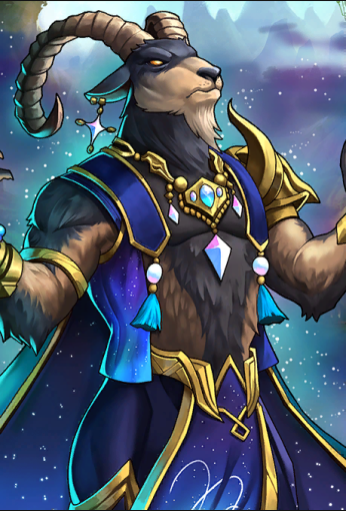 Каприхор Долина Фавна 25 августа 2025 |
Кетрас Бык Дикий Дол 7 июля 2025 | 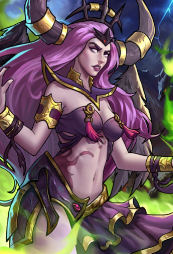 Королева Греха Грех Мараджа 9 июня 2025 | 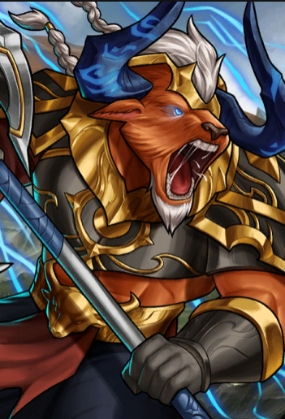 Король Стормгард Дикий Дол 14 июля 2025 | 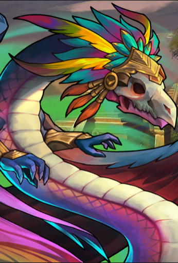 Кукулькан Солнечный Кряж 20 октября 2025 | Левкитракс Серебристая Поляна 14 июля 2025 | Мистралия Штормхейм 25 августа 2025 | 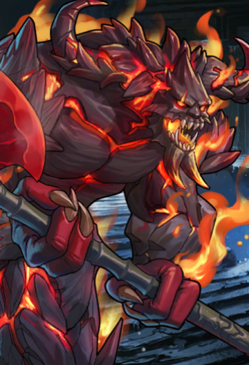 Обсидиус Драк-Зум 2 июня 2025 | Павшая Валдис Драк-Зум 1 сентября 2025 |
Рыбы Мерлантис 6 октября 2025 | Стрелециан Райские Поля 14 июля 2025 | 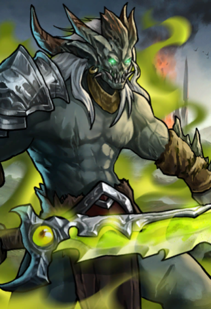 Тень Зорна Грош-Нак 5 мая 2025 | Ундин Мерлантис 12 мая 2025 | 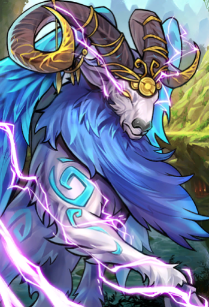 Фавн Долина Фавна 18 августа 2025 | Фея-крестная мать гоблинов Заеджин 4 августа 2025 | Цилопочтли Солнечный Кряж 4 августа 2025 | Чемпион Ану Лезвие Меча 23 июня 2025 |
| 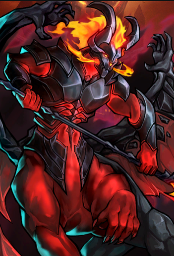 Астарот Отравленные Земли 6 января 2025 | 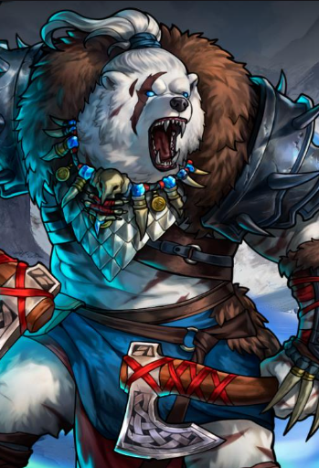 Велес Бурерожденный Урскоград 26 мая 2025 | 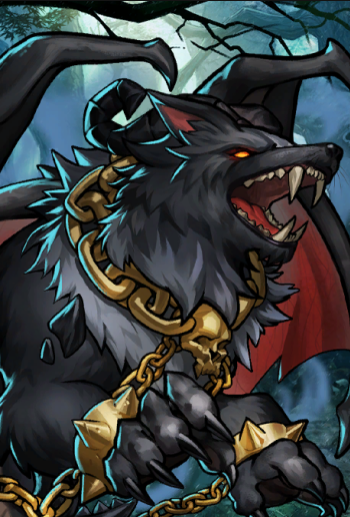 Реавнароккр Могримова Чаща 10 марта 2025 |
Сарафиэль Вайтхельм 11 августа 2025 |
*Красная дата - это дата ввода мифика в игру
 Горр Мурктут Дикий Дол 12 января 2026 |  Йохаултисетль Солнечный Кряж 5 декабря 2025 |  Королева Вильгельмина Гульвания 26 января 2026 |
Краг'Ракс Кровавый Череп Грош-Нак 10 ноября 2025 |  Кром Круач Полуночный 2 января 2026 |  Кумико Лисиция 27 октября 2025 |
 Онурис Земли Прайда 6 февраля 2026 |  Пустокус Блуждающие Пески 7 ноября 2025 |
*Красная дата - это дата ввода мифика в игру
Дата начала 30 цикла: 10 ноября 2025
*Ориентировочная дата окончания текущего 30 цикла: 20-27 марта
**В таблицах серая дата - это дата предыдущего выпадения мифика в Кузне Душ в 29 цикле;